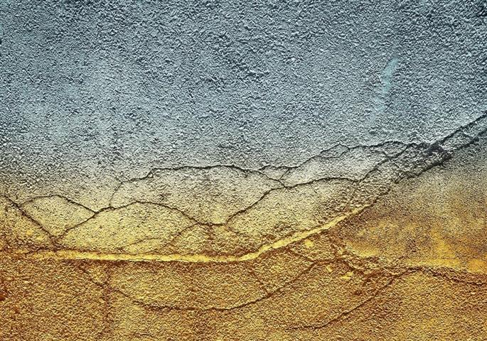
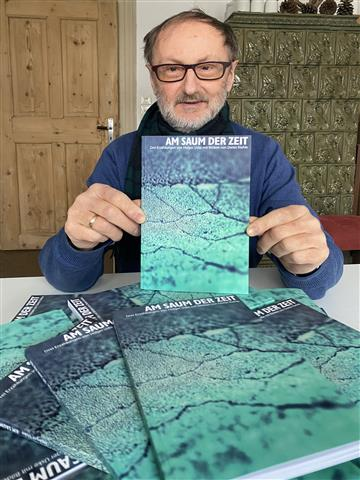

Drei Erzählungen mit Bildern von Dieter Kiehle. Edition Sinnbild 2021.

Eines der Bilder von Dieter Kiehle im Band.
WEGE
Sie schlugen den Weg nach links ein, und er schlenderte neben ihr her. Das war es doch: diese Leichtigkeit, zu gehen. Die er neben ihr immer verspürte. Als nähme sie einfach ein Stück Schwere fort. Dass seine Schritte leichter wurden, der Gang anders, die Gedanken heller. Er wusste gar nicht genau, wohin der Weg führte. Links zweigte einer vom Hauptweg ab, in die weniger besuchten Areale des Parks. Der ihm in der Abendsonne anders vorkam: gesättigt vom Tag, stiller nach dem Durchzug der Besucher.
Den Weg nach links. Von den späten Besuchern weg. Wer von ihnen hatte ihn gewählt, er oder sie.
Sieh mal, sagte sie.
Vielleicht war das eine Erle. Die bestimmt selten war. Von der er zu wenig wusste. Nach Buchen, Eichen, Birken war seine Laubbaumkenntnis beinahe aufgebraucht. Etwas ganz Besonderes: da kam nur sie in Frage. Er konnte sich hinter sie stellen, die Arme um sie legen und in die Richtung ihres Blickes schauen. Sein Gesicht an ihres legen.
Schön, oder?
Schön, sagte er und wollte nichts als diesen Moment behalten.

Der Autor mit seinem Buch. Foto: Manuela Hahnebach
AM SAUM DER ZEIT (Titelanfang)
Als ich fünfzehn war, zogen wir in eine andere Gegend. Meine Eltern verkauften mir das als Aufstieg. Sie konnten beide ihrer Arbeit weiter nachgehen, eine halbe Stunde zu Fuß zum Büro, das war doch kein Problem. Ich musste die Schule wechseln. Mit fünfzehn bist du Klasse 9, da lernst du die Mädchen schon kennen, wie sie als Frau sein werden. Aber alles kribbelt noch und ist neu. Hanne im Nachbarhaus war dreizehn, wie sie mir bald verriet. Ich hatte sie zuerst für einen Jungen gehalten, mit dem ich auch im neuen Stadtteil Streiche würde aushecken können, mit ihren kurzen Haaren und so dünn, wie sie war.
Hinter den Reihenhäusern gab es hier kleine Gärten. Vorher, in den Neubauhäusern, hatten wir auf der anderen Straßenseite einfach ein Stück Land in Beschlag genommen, umzugraben begonnen und ein paar Pflanzen gesetzt. Die meisten machten das so. Das Land schien niemandem zu gehören oder allen oder der Stadt. Keiner baute einen Zaun. Jeder wusste, wem sein Stück Anbaufläche gehörte. Erdbeeren immerhin ernteten wir. Wir, das waren Mutter und ich. Vater hatte kein Faible dafür.